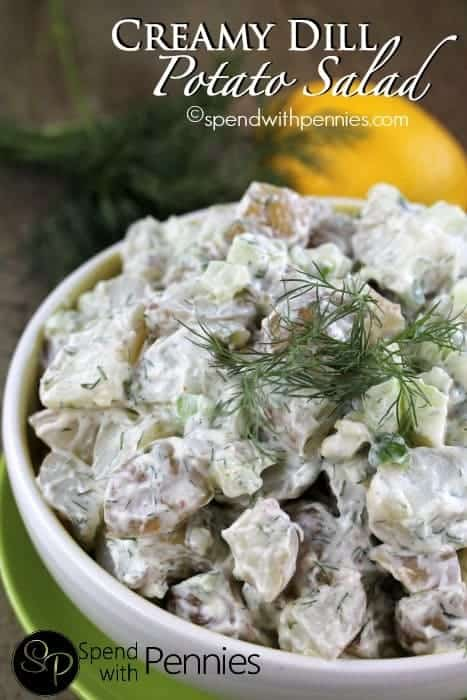

Creamy Dill Potatoe Salad

Dill potato salad will take your potato salad game up to the next level. This is one of my favorite potato salads recipes of all time.
Ingredients
- 3 pounds potatoes white or red skinned
- 1 1/2 cups celery diced
- 3 tablespoons green onion finely sliced
- 3/4 cup mayonnaise
- 1/2 cup sour cream
- 2 tablespoons lemon juice
- 4 tablesppons fresh dill minced
- 1 tablespoon dijon mustard
Steps
- Boil the potatoes until tender (approx. 15-20 minutes).
- Cool and cut into bite sized pieces.
- In a large bowl, mix all ingredients except potatoes.
- Combine cooled potatoes with dill muxture and refrigerate at least one hour